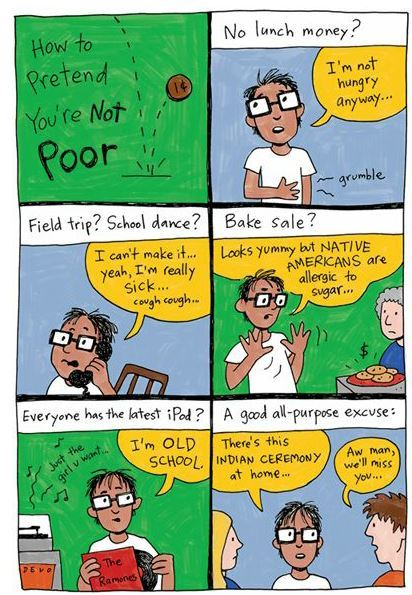
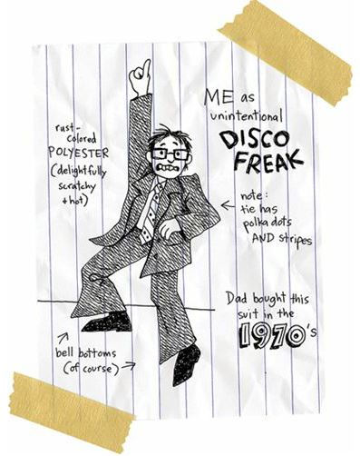
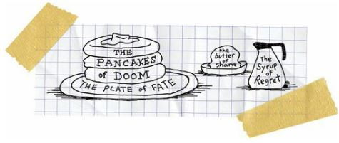
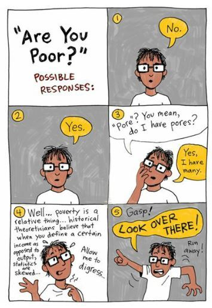

Dance, Dance, Dance
Traveling between Reardan and Wellpinit, between the little white town and the reservation, I always felt like a stranger.
I was half Indian in one place and half white in the other.
It was like being Indian was my job, but it was only a part-time job. And it didn’t pay well at all.
The only person who made me feel great all the time was Penelope.
Well, I shouldn’t say that.
I mean, my mother and father were working hard for me, too. They were constantly scraping together enough money to pay for gas, to get me lunch money, to buy me a new pair of jeans and a few new shirts.
My parents gave me just enough money so that I could pretend to have more money than I did.
I lied about how poor I was.
Everybody in Reardan assumed we Spokanes made lots of money because we had a casino. But that casino, mismanaged and too far away from major highways, was a money-losing business. In order to make money from the casino, you had to work at the casino.
And white people everywhere have always believed that the government just gives money to Indians.
And since the kids and parents at Reardan thought I had a lot of money, I did nothing to change their minds. I figured it wouldn’t do me any good if they knew I was dirt poor.
What would they think of me if they knew I sometimes had to hitchhike to school?
Yeah, so I pretended to have a little money. I pretended to be middle class. I pretended I belonged.
Nobody knew the truth.
Of course, you can’t lie forever. Lies have short shelf lives. Lies go bad. Lies rot and stink up the joint.
In December, I took Penelope to the Winter Formal. The thing is, I only had five dollars, not nearly enough to pay for anything—not for photos, not for food, not for gas, not for a hot dog and soda pop. If it had been any other dance, a regular dance, I would have stayed home with an imaginary illness. But I couldn’t skip Winter Formal. And if I didn’t take Penelope then she would have certainly gone with somebody else.

Because I didn’t have money for gas, and because I couldn’t have driven the car if I wanted to, and because I didn’t want to double date, I told Penelope I’d meet her at the gym for the dance. She wasn’t too happy about that.
But the worst thing is that I had to wear one of Dad’s old suits:

I was worried that people would make fun of me, right? And they probably would have if Penelope hadn’t immediately squealed with delight when she first saw me walk into the gym.
“Oh, my, God!” she yelled for everybody to hear. “That suit is so beautiful. It’s so retroactive. It’s so retroactive that it’s radioactive!”
And every dude in the joint immediately wished he’d worn his father’s lame polyester suit.
And I imagined that every girl was immediately breathless and horny at the sight of my bell-bottom slacks.
So, drunk with my sudden power, I pulled off some lame disco dance moves that sent the place into hysterics.
Even Roger, the huge dude I’d punched in the face, was suddenly my buddy.
Penelope and I were so happy to be alive, and so happy to be alive TOGETHER, even if we were only a semi-hot item, and we danced every single dance.
Nineteen dances; nineteen songs.
Twelve fast songs; seven slow ones.
Eleven country hits; five rock songs; three hip-hop tunes.
It was the best night of my life.
Of course, I was a sweaty mess inside that hot polyester suit.
But it didn’t matter. Penelope thought I was beautiful and so I felt beautiful.
And then the dance was over.
The lights flicked on.
And Penelope suddenly realized we’d forgotten to get our picture taken by the professional dude.
“Oh, my God!” she yelled. “We forgot to get our picture taken! That sucks!”
She was sad for a moment, but then she realized that she’d had so much fun that a photograph of the evening was completely beside the point. A photograph would be just a lame souvenir.
I was completely relieved that we’d forgotten. I wouldn’t have been able to pay for the photographs. I knew that. And I’d rehearsed a speech about losing my wallet.
I’d made it through the evening without revealing my poverty.
I figured I’d walk Penelope out to the parking lot, where her dad was waiting in his car. I’d give her a sweet little kiss on the cheek (because her dad would have shot me if I’d given her the tongue while he watched). And then I’d wave good-bye as they drove away. And then I’d wait in the parking lot until everybody was gone. And then I’d start the walk home in the dark. It was a Saturday, so I knew some reservation family would be returning home from Spokane. And I knew they’d see me and pick me up.
That was the plan.
But things changed. As things always change.
Roger and a few of the other dudes, the popular guys, decided they were going to drive into Spokane and have pancakes at some twenty-four–hour diner. It was suddenly the coolest idea in the world.
It was all seniors and juniors, upperclassmen, who were going together.
But Penelope was so popular, especially for a freshman, and I was popular by association, even as a freshman, too, that Roger invited us to come along.
Penelope was ecstatic about the idea.
I was sick to my stomach.
I had five bucks in my pocket. What could I buy with that? Maybe one plate of pancakes. Maybe.
I was doomed.

“What do you say, Arnie?” Roger asked. “You want to come carbo-load with us?”
“What do you want to do, Penelope?” I asked.
“Oh, I want to go, I want to go,” she said. “Let me go ask Daddy.”
Oh, man, I saw my only escape. I could only hope that Earl wouldn’t let her go. Only Earl could save me now.
I was counting on Earl! That’s how bad my life was at that particular moment!
Penelope skipped over toward her father’s car.
“Hey, Penultimate,” Roger said. “I’ll go with you. I’ll tell Earl you guys are riding with me. And I’ll drive you guys home.”
Roger’s nickname for Penelope was Penultimate. It was maybe the biggest word he knew. I hated that he had a nickname for her. And as they walked together toward Earl, I realized that Roger and Penelope looked good together. They looked natural. They looked like they should be a couple.
And after they all found out I was a poor-ass Indian, I knew they would be a couple.
Come on, Earl! Come on, Earl! Break your daughter’s heart!
But Earl loved Roger. Every dad loved Roger. He was the best football player they’d ever seen. Of course they loved him. It would have been un-American not to love the best football player.
I imagined that Earl said his daughter could go only if Roger got his hands into her panties instead of me.
I was angry and jealous and absolutely terrified.
“I can go! I can go!” Penelope said, ran back to me, and hugged me hard.
An hour later, about twenty of us were sitting in a Denny’s in Spokane.
Everybody ordered pancakes.
I ordered pancakes for Penelope and me. I ordered orange juice and coffee and a side order of toast and hot chocolate and French fries, too, even though I knew I wouldn’t be able to pay for any of it.
I figured it was my last meal before my execution, and I was going to have a feast.
Halfway through our meal, I went to the bathroom.
I thought maybe I was going to throw up, so I kneeled at the toilet. But I only retched a bit.
Roger came into the bathroom and heard me.
“Hey, Arnie,” he said. “Are you okay?”
“Yeah,” I said. “I’m just tired.”
“All right, man,” he said. “I’m happy you guys came tonight. You and Penultimate are a great couple, man.”
“You think so?”
“Yeah, have you done her yet?”
“I don’t really want to talk about that stuff.”
“Yeah, you’re right, dude. It’s none of my business. Hey, man, are you going to try out for basketball?”
I knew that practice started in a week. I’d planned on playing. But I didn’t know if the Coach liked Indians or not.
“Yeah,” I said.
“Are you any good?”
“I’m okay.”
“You think you’re good enough to play varsity?” Roger asked.
“No way,” I said. “I’m junior varsity all the way.”
“All right,” Roger said. “It will be good to have you out there. We need some new blood.”
“Thanks, man,” I said.
I couldn’t believe he was so nice. He was, well, he was POLITE! How many great football players are polite? And kind? And generous like that?
It was amazing.
“Hey, listen,” I said. “The reason I was getting sick in there is—”
I thought about telling him the whole truth, but I just couldn’t.
“I bet you’re just sick with love,” Roger said.
“No, well, yeah, maybe,” I said. “But the thing is, my stomach is all messed up because I, er, forgot my wallet. I left my money at home, man.”
“Dude!” Roger said. “Man, don’t sweat it. You should have said something earlier. I got you covered.”
He opened his wallet and handed me forty bucks.
Holy, holy.
What kind of kid can just hand over forty bucks like that?
“I’ll pay you back, man,” I said.
“Whenever, man, just have a good time, all right?”
He slapped me on the back again. He was always slapping me on the back.
We walked back to the table together, finished our food, and Roger drove me back to the school. I told them my dad was going to pick me up outside the gym.
“Dude,” Roger said. “It’s three in the morning.”
“It’s okay,” I said. “My dad works the swing shift. He’s coming here straight from work.”
“Are you sure?”
“Yeah, everything is cool.”
“I’ll bring Penultimate home safely, man.”
“Cool.”
So Penelope and I got out of the car so we could have a private good-bye. She had laser eyes.
“Roger told me he lent you some money,” she said.
“Yeah,” I said. “I forgot my wallet.”
Her laser eyes grew hotter.
“Arnold?”
“Yeah?”
“Can I ask you something big?”
“Yeah, I guess.”
“Are you poor?”
I couldn’t lie to her anymore.
“Yes,” I said. “I’m poor.”
I figured she was going to march out of my life right then. But she didn’t. Instead she kissed me. On the cheek. I guess poor guys don’t get kissed on the lips. I was going to yell at her for being shallow. But then I realized that she was being my friend. Being a really good friend, in fact. She was concerned about me. I’d been thinking about her breasts and she’d been thinking about my whole life. I was the shallow one.
“Roger was the one who guessed you were poor,” she said.
“Oh, great, now he’s going to tell everybody.”
“He’s not going to tell anybody. Roger likes you. He’s a great guy. He’s like my big brother. He can be your friend, too.”
That sounded pretty good to me. I needed friends more than I needed my lust-filled dreams.
“Is your Dad really coming to pick you up?” she asked.
“Yes,” I said.
“Are you telling the truth?”
“No,” I said.

“How will you get home?” she asked.
“Most nights, I walk home. I hitchhike. Somebody usually picks me up. I’ve only had to walk the whole way a few times.”
She started to cry.
FOR ME!
Who knew that tears of sympathy could be so sexy?
“Oh, my God, Arnold, you can’t do that,” she said. “I won’t let you do that. You’ll freeze. Roger will drive you home. He’ll be happy to drive you home.”
I tried to stop her, but Penelope ran over to Roger’s car and told him the truth.
And Roger, being of kind heart and generous pocket, and a little bit racist, drove me home that night.
And he drove me home plenty of other nights, too.
If you let people into your life a little bit, they can be pretty damn amazing.